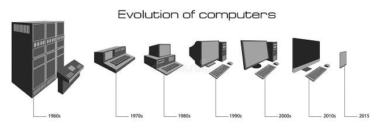
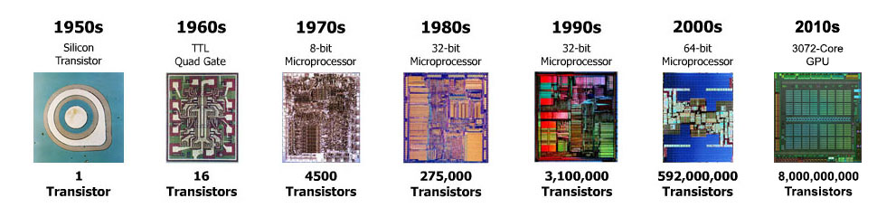

In this website there is information on the current and past terms, the trends that started new developments of better more efficient technology, and previous concepts of computers as they were developed and have advanced throughout the years.
The development of computing devices has vastly improved over the years, we have seen technology that once required an entire room to operate now has the capability of fitting in the palm of your hand.
The many uses of technology has increased by a rather incredible amount as the 1st generations of computers was able to calculate one problem at a time, this restricted the calculations as they often took several days. In this current period of time we have smartphones, these are compact microcomputers stuffed with features that can answer a problem within seconds as they have full access to the internet, an archive of information at the tips of ones fingertips. 
Refrences used.
Wikipedia Britannica TutorialsPoint GeeksForGeeks